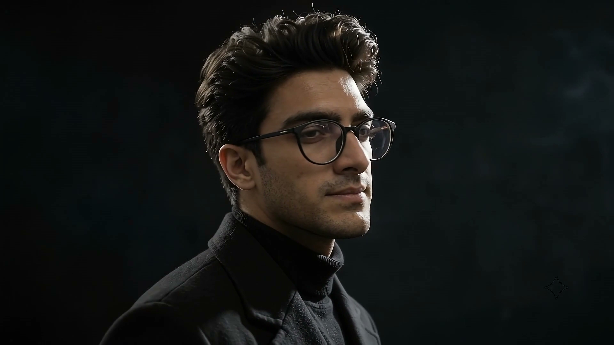

Automation that keeps running after launch day.
- 222 nodes
AI email triage for a translation company
n8n - 20-30 hrs
a week saved on CV screening
n8n - 7 roles
FERPA credentials tracked with auto escalation
GoHighLevel

Muhammad HarisAI automation consultant
 Top Rated Plus
Top Rated Plus